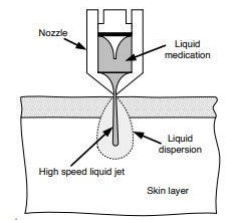
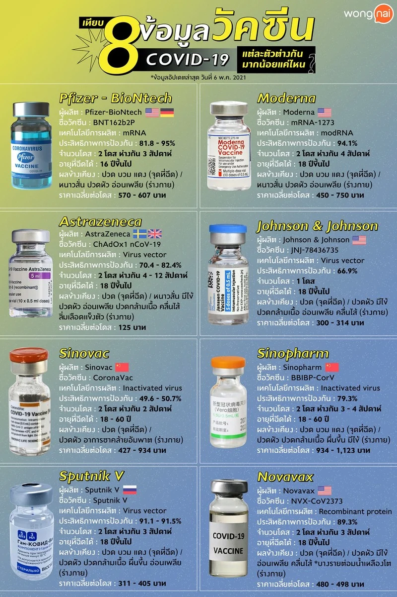
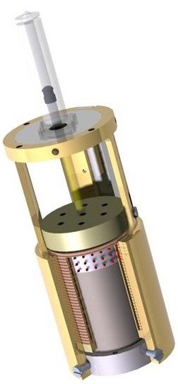
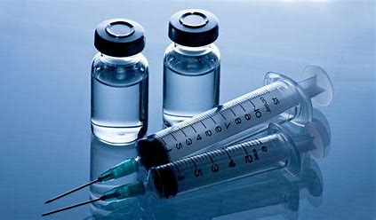

<!DOCTYPE html>
<html lang="en">
<head>
    <meta charset="UTF-8">
    <meta http-equiv="X-UA-Compatible" content="IE=edge">
    <meta name="viewport" content="width=device-width, initial-scale=1.0">
    <link rel="stylesheet" href="css/bootstrap.min.css">
    <link rel="stylesheet" href="CSS_homemade/dlc.css">
    <script src="js/bootstrap.js"></script>
    <script src="JS_homemade/Js.js"></script>
    <title>Reserch | STEM04</title>
</head>
<body class="bgThemecolor">
    <!--Navbar-->
    <nav class="navbar navbar-expand-sm navbar-dark bg-dark sticky-top">
        <!--Content-->
        <div class="container-fluid">
            <!--Brand-->
            <a href="AboutUs.html" class="navbar-brand topnav-centered"></a>
            <!--Welcome-->
            <div class="navbar-nav topnav-centered">
                <ul class=" navbar-nav">
                    <li class="nav-item"><a class="nav-link active" href="AboutUs.html">--Reserch--</a></li>
                </ul>
            </div>
            <!--Menu-->
            <button class="navbar-toggler" data-bs-toggle="collapse" data-bs-target="#navbarToggle">
                <span class="navbar-toggler-icon"></span>
            </button>
            <div class="collapse navbar-collapse justify-content-end" id="navbarToggle">
                <ul class="navbar-nav">
                    <br><li class="nav-item"><a class="nav-link " href="intro.html">Welcome</a></li>
                    <li class="nav-item"><a class="nav-link" href="Products.html">Products</a></li>
                    <li class="nav-item"><a class="nav-link" href="Picture.html">Pictures</a></li>
                    <li class="nav-item"><a class="nav-link active" href="#Reserch">Reserch</a></li>
                    <li class="nav-item"><a class="nav-link " href="AboutUs.html">About Us</a></li>
                </ul>
            </div>
        </div>
        </nav>

    <center><h1 class="fontPrompt" style="margin-bottom : 5rem; margin-top : 2rem; color: whitesmoke;">เอกสารอ้างอิง</h1></center>

    <div style="margin-left: 25%;"   class="row row-cols-1 row-cols-md-1 g-5 w-50">
        <div  class="col">
            <div style="background-color: wheat;" class="card h-100">
                <h5 style="text-align: center;" class="card-header">Jet Injector</h5>
                
                    <div style="text-align: center;" class="card-body">
                        <p class="card-text">เทคโนโลยีฉีดยาด้วยลำพุ่งของเหลวความเร็วสูง (jet injection) เป็นหนึ่งในวิธีการนำส่งยาผ่านผิวหนัง 
                            (drug delivery across the skin) โดยไม่ใช้เข็ม (needle-free drug delivery) วิธีนี้จะอาศัยการเจาะผ่าน
                            ผิวหนังของลำพุ่งความเร็วสูงของยาที่ออกจากหัวฉีด (nozzle) โดยการกดตัวยา (liquid medication) ในหัวฉีดให้
                            มีความดันสูงและไหลผ่านปลายหัวฉีดที่เป็นคอคอดขนาดเล็ก ของเหลวในหัวฉีดจะถูกอัดหรือกดด้วยแท่งกด
                            (piston) ซึ่งจะได้รับแรงกดจากพลังงานต้นกำลัง (power source) โดยทั่วไปมักนิยมใช้ สปริง แก๊สแรงดันสูง หรือ
                            พลังงานไฟฟ้า</p>
                    </div>
                    <div style="text-align: center;" class="card-footer">
                        <a target="_blank" class="btn btn-primary justify-content-center" href="./pdf/jetInjector.pdf">Learn More</a>
                    </div>
                </div>
            </div>
        <div class="col">
            <div style="background-color: wheat;" class="card h-100">
                <h5 style="text-align: center;" class="card-header">ชนิดของวัคซีน</h5>
                
                <div style="text-align: center;"  class="card-body">
                    <p class="card-text">ด้วยสถานการณ์โควิด-19 ตั้งแต่ปีก่อน ทำให้หลายคนโฟกัสเรื่องนี้กันอย่างต่อเนื่องไม่ขาดสาย! และล่าสุด ในบางประเทศได้มีการพัฒนาและผลิตวัคซีนเพื่อป้องกันโรคโควิด-19 มาแล้วหลายยี่ห้อ ซึ่งวัคซีนโควิด-19 บางยี่ห้อนั้นก็กำลังจะเดินทางเข้ามาในไทยแล้ว วันนี้ Wongnai เลยจะพาเพื่อน ๆ ไปเจาะลึกหาคำตอบกัน! กับ 8 ข้อมูลวัคซีนโควิด-19 ทั่วโลก ว่าแต่ละยี่ห้อเป็นอย่างไร แตกต่างกันมากน้อยแค่ไหน</p>
                </div>
                <div style="text-align: center;" class="card-footer">
                    <a target="_blank" style="text-align: center;" class="btn btn-primary" href="https://www.wongnai.com/news/information-of-covid-19-vaccine">Learn More</a>
                </div>
            </div>
        </div>
        <div class="col">
            <div style="background-color: wheat;" class="card h-100">
                <h5 style="text-align: center;" class="card-header">Mental Reserves Keep Brains Agile</h5>
                
                <div style="text-align: center;" class="card-body">
                    <p class="card-text">MIT researchers have engineered a device that delivers a tiny, high-pressure jet of 
                        medicine through the skin without the use of a hypodermic needle. The device can be 
                        programmed to deliver a range of doses to various depths — an improvement over similar jetinjection systems that are now commercially available. </p>
                </div>
                <div style="text-align: center;" class="card-footer">
                    <a target="_blank" class="btn btn-primary" href="https://www.nytimes.com/2007/12/11/health/11brod.html?searchResultPosition=2">Learn More</a>
                </div>
            </div>
        </div>
        <div  class="col">
            <div style="background-color: wheat;" class="card h-100">
                <h5 style="text-align: center;" class="card-header">การเก็บรักษาวัคซีน</h5>
                
                <div style="text-align: center;" class="card-body">
                    <p class="card-text"> วัคซีนบางชนิดที่อยูในรูปผงแห้ง เชน หัด MMR และ BCG องค์การอนามัยโลกได้ยกเลิกคำแนะนำ
                        การเก็บวัคซีนชนิดผง แห้ง (freezed dried vaccine) ในช่องแช่แข็ง (-15 ถึง -25 °C) แล้ว เนื่องจากไม่มีความจำ
                        เป็นแต่ให้เก็บรักษาและ ขนส่งที่อุณหภูมิ 2-8 °C แทน
                        ห้ามเก็บวัคซีนทุกชนิดที่ฝาตู้เย็น
                        วัคซีนที่เบิกมาใหม่ ใหจัดเรียงตามหลัก First Expire First Out (FEFO) 
                        จัดเรียงให้เป็นแถวๆ และให้มีช่องวางระหว่างแถว เพื่อให้ความเย็นกระจายทั่วถึง
                        บันทึกอุณหภูมิอยางน้อยวันละ 2 ครั้ง เช้า,เย็น ทุกวัน ไมเว้นวันหยุดราชการ
                        วัคซีนที่อยูในรูปฃองผงแห้ง ต้องใช้น้ำยาละลายของวัคซีนชนิดนั้นๆ และผลิตจากผู้ผลิตเดียวกัน </p>
                </div>
                <div style="text-align: center;" class="card-footer">
                    <a target="_blank" class="btn btn-primary" href="http://sawanghospital.com/sawang/myfile/271014_111222.pdf">Learn More</a>
                </div>
            </div>
        </div>
    </div>
    <br><br><br>
    <!--Footer-->
    <nav aria-label="Page navigation example">
        <ul class="pagination justify-content-center">
            <li class="page-item">
                <a class="pageNav page-link" href="Picture.html" aria-label="Previous">
                <span aria-hidden="true">&laquo;</span>
                <span class="sr-only">Previous</span>
                </a>
            </li>
            <li class="page-item"><a class="pageNav page-link" href="intro.html">1</a></li>
            <li class="page-item"><a class="pageNav page-link" href="Products.html">2</a></li>
            <li class="page-item"><a class="pageNav page-link" href="Picture.html">3</a></li>
            <li class="page-item"><a class="pageNav_active page-link" href="Reserch.html">4</a></li>
            <li class="page-item"><a class="pageNav page-link" href="AboutUs.html">5</a></li>
            <li class="page-item">
                <a class="pageNav page-link" href="AboutUs.html" aria-label="Next">
                <span aria-hidden="true">&raquo;</span>
                <span class="sr-only">Next</span>
                </a>
            </li>
        </ul>
        </nav>
        <div class="footerProductWeb"></div>
</body>
</html>